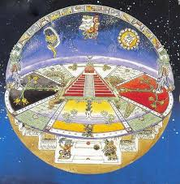
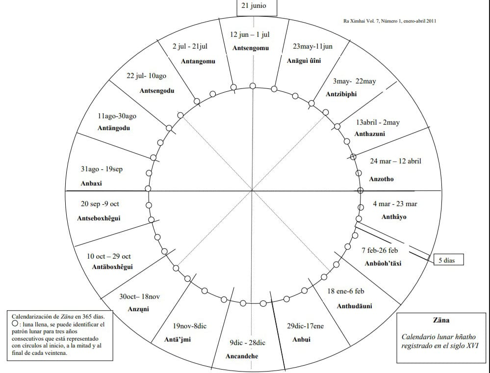

Para el pueblo ñähñu, la existencia es un tejido sagrado: su concepción del mundo y el universo no solo narra el origen de la vida, sino que la sostiene, porque todos los seres desde el más diminuto hasta el más grande brotan de la tierra como frutos de un mismo vientre.
De acuerdo con sus creencias ancestrales, el universo ñähñu se estructura en tres espacios sagrados, interconectados y fundamentales para entender la vida:
1. El cielo (Hyadi)
El cielo, donde se encuentran nuestras divinidades, nuestro divino padre sol y nuestra divina madre luna. El solo le te da el rasgo masculino por los rayos que emiten que son fuertes y gracias a ellos se da la vida en la tierra, mientras que la luna su luz es tenue al igual que su calidez pareciera el amor de una madre, zi nana (la divina madre luna) está muy presente en pueblo, una de sus intervenciones es en la cosecha en que momento se debe de sembrar o en el mar incluso influye
o Zi dada (el Divino Padre Sol), fuente de luz y orden.
o Zi nana (la Divina Madre Luna), guardiana de los ciclos y la fertilidad.
2. La tierra (Ma nk’ami)
Ma nk°ami es el lugar donde todos los seres vivos (seres humanos, animales y plantas) no encontramos por un periodo corto llamada vida, en la cual pasaremos encontrando, pasando y caminando a lado de otros seres vivos.
3. El inframundo (Nidu)
Reino de Zi du, deidad de la muerte, donde las almas tienen que pasar a mortal temporalmente donde deberán morar antes de regresar a visitar a sus seres queridos el día de los muertos (originalmente se celebraba en julio).

El simbolismo del número tres
Esta tridimensionalidad se refleja en la vida cotidiana ñähñu:
• El fogón se sostiene sobre tres piedras, símbolo de la unión entre cielo, tierra e inframundo.
• Utensilios domésticos (como molcajetes o bancos) suelen tener tres patas, replicando el orden cósmico.
• El calendario agrícola se divide en tres etapas, marcadas por la luna: siembra, petición de lluvias y cosecha.
El pueblo le daba o le gustaba mantener presente sus divinidades presentes, por eso es que algunos objetos hacen referencia al numero 3 y lo que representa para ellos
Rituales y ciclos sagrados
• Ofrendas a la tierra: Al sembrar, se dejaban brevas o primeros frutos (julio-agosto) para honrar a Hyats’i (la Madre Tierra).
• Plegarias al sol: En el cerro más alto, se pedía lluvia mediante cantos y ofrendas a Zi dada.
• Fiestas de gratitud: El año ñähñu terminaba con 5 días sagrados (yá zi pa), dedicados al ayuno, el fuego nuevo y la gratitud a las divinidades.• Fiestas de gratitud: El año ñähñu terminaba con 5 días sagrados (yá zi pa), dedicados al ayuno, el fuego nuevo y la gratitud a las divinidades.
Les gustaba agradecer y adorar a sus divinidades por eso es que festejaban, cantaban, bailaban y ofrendaban
El Calendario Hñähñu: Un Ciclo Solar y Lunar
El calendario Hñähñu, intrínsecamente ligado a los ciclos lunares dentro del año solar, inicia su cómputo de 365 días cada 29 de marzo según el calendario gregoriano. Un día clave es el penúltimo de la veintena 18, conocido como Ambuœndaxi en el Códice Huichapan, que coincide con el 22 de marzo, el día del equinoccio.
Celebraciones de Año Nuevo
El pueblo Hñähñu celebra tradicionalmente su Año Nuevo el 19 de marzo. La víspera, el 18 de marzo, se realiza la ceremonia de apagar el fuego y limpiar las tres piedras del fogón, o gospi, adornando este espacio sagrado con flores, especialmente jaras. El día 19, se llevan a cabo ceremonias en honor al fuego nuevo.
Las Veintenas y su Significado
Este calendario se divide en 18 "meses" de 20 días cada uno, seguidos por un período especial de 5 días dedicados a festividades y agradecimientos a las deidades del sol, el agua y la tierra. Cada una de estas veintenas posee un nombre distintivo y está intrínsecamente ligada a actividades agrícolas y rituales específicos:
- Anathayo (Mar 04/23): Desgranar la mazorca, dedicado al Señor de la dualidad.
- Anzotho (Mar 24/12 Abr): La buena entrada, marcando el inicio de la siembra.
- Anthazuni (Abr 13/02 May): El nixtamal, momento para preparar alimentos y bebidas rituales para ofrendar en el cerro.
- Antzibiphi (May 03/22): Cortar nubes con humo, un ritual para ayudar a los graniceros.
- Anaguíuini (May 23/11 Jun): Enterrar alimento, para abonar la tierra.
- Antsengomu (Jun 12/01 Jul): Pequeña fiesta del chilacayote, en preparación para el crecimiento de las plantas.
- Antangomu (Jul 02/21): Fiesta grande del chilacayote, celebrando la cosecha.
- Antsengodu (Jul 22 /10 Ago): Pequeña fiesta a la muerte, para agradecer a los antepasados.
- Antangodu (Ago 11/30): Fiesta grande de la muerte, extendiendo la celebración.
- Anbaxi (Ago 31/19 Sep): Escoba, donde los ahuizotes barren las nubes de oriente para propiciar la lluvia.
- Antsehoxhegui (Sep 20/09 Oct): Pequeña ayuda a la milpa, cuando el maíz madura.
- Antaboxhegui (Oct 10/29): Gran ayuda a la milpa.
- Anzuni (Oct 30/18 Nov): Llorar, tiempo de luto, cuando se deshoja el maíz.
- Antajmí (Nov 19/08 Dic): Tortilla blanca, para degustar la cosecha.
- Acandehe (Dic 09/28): Al fin que la vuelta del tiempo habrá agua, una predicción.
- Anbui (Dic 29/17 Ene): La tierra en quietud, un tiempo de permanencia.
- Anthudauni (Ene 18/06 Feb): Cortadura de flores, una siembra simbólica.
- Dupa (Feb 27/03 Mar): Los cinco días inexistentes.
- Dupa (Feb 27/03 Mar): Los cinco días inexistentes.

El Ritual del Fuego Nuevo: Un Cambio Histórico
La ceremonia que tiene lugar cada 18 de marzo celebra el inicio del nuevo ciclo de 365 días al final de la primera veintena. Originalmente, este rito servía para verificar la correcta alineación del calendario con la posición del sol en el equinoccio, visible el 23 de marzo. Sin embargo, con la llegada de los españoles, esta tradición pudo haber cambiado, trasladando la celebración al 18 y 19 de marzo del calendario gregoriano, fusionando así los numerales de la veintena Hñähñu con el mes del calendario occidental.